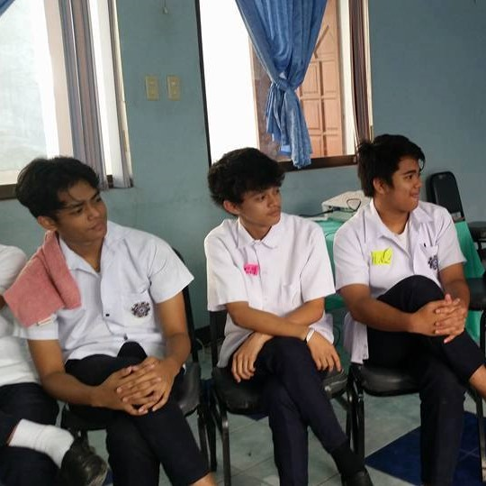

Junior High was a very good experience for me, it was filled with excitement. I would always walk down the hallway knowing everyone and every teacher, but I would always think about going to highschool. I wanted to leave junior high and go to senior highschool so bad. I remember I would always say ¨I can't wait till highschool¨ but when I left the place where all my memories were made , where I felt most comfortable I noticed things about myself. I noticed that I took junior high for granted I didn't even think about all the things that I would miss, I was just so caught up with school. In junior high I didn't realize that I was going to miss being there everyday and seeing my favorite teachers and bestfriends. My high school experience has taught me a lot. High school has taught me how I act towards people and much more. When I came to high school and was here for a few months I wanted to go back to junior high. I missed all the memories, teachers, less homework, etc.